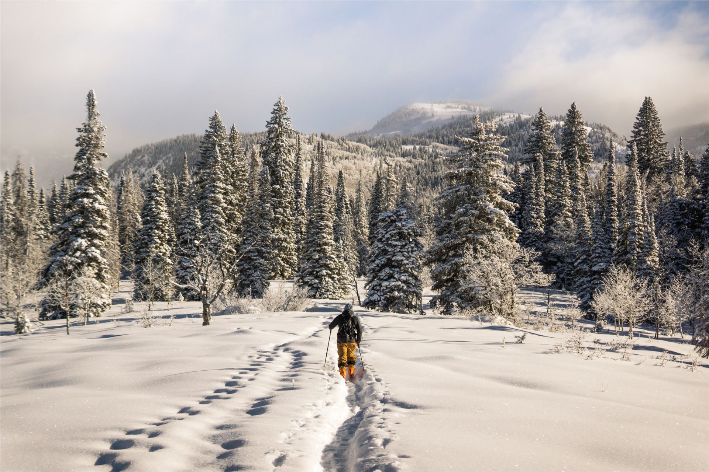
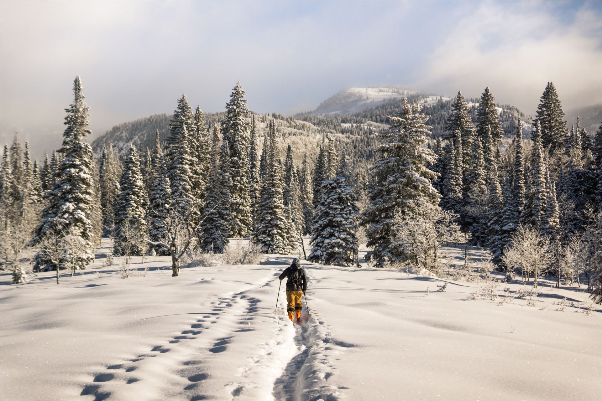

ПРОКАТ ЛЫЖ
Немного о лыжах
При катании на лыжах участвуют практически все группы мышц, причем не только крупных, но и второстепенных. Максимальная нагрузка при этом приходится на мышцы нижних конечностей – бедра и голени, чуть менее активно работает мускулатура пресса и спины, а также верхних конечностей. Такая нагрузка на мышцы приводит к повышению их тонуса. Они приобретают привлекательную форму, становятся сильнее. Повышается выносливость спортсмена. Обратите внимание: разные виды лыжного хода воздействуют на разные группы мышц. И, конечно, лыжный спорт не поможет накачать мышцы, но он является отличным средством поддержания их в тонусе.
Пару фотографий
.png) 

Подробная инструкция
- Прийти на стадион, зайти в холл. Подойти к столику секретаря.
- Спросить у администрации на наличие свободных мест в секции, в которую хотите записать вашего ребёнка. Обязательно взять с собой паспорт, свидетельтво рождения ребёнка
- Пройти процедуру регистрации, если есть наличие свободных мест в секции.
- Узнать расписание секции.
Отзывы
Роман Тихонов
Лыжи мой любимый спорт с этого дня.
Лина Шавора
Моим родителям понравилось всё, но мне лично не понравилось шнур на коньках.
Саша Сверчкова
Хороший стадион, но чего-то не хватает.